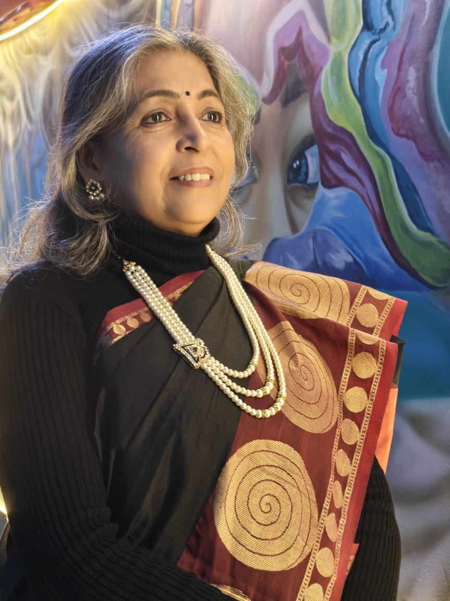
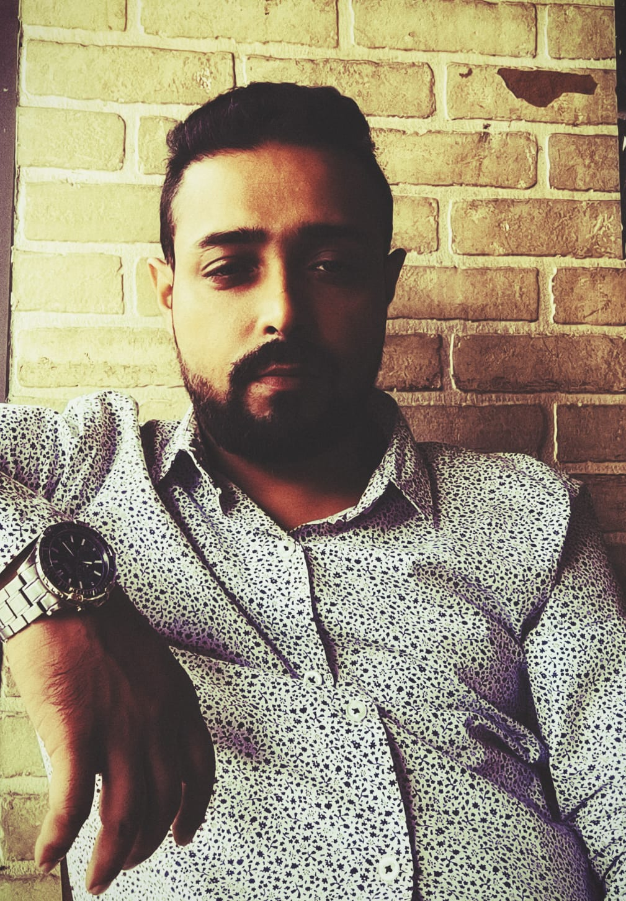
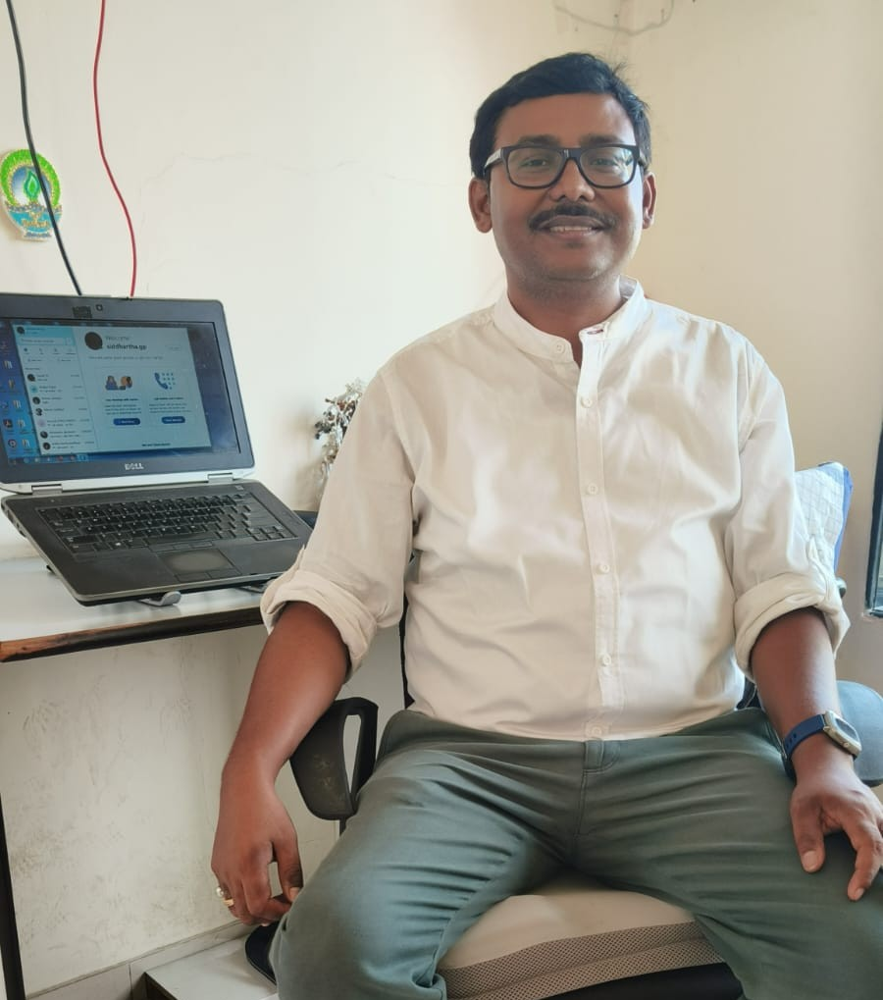

Minakshi Chatterjee is the Director of Sandhit Foundation, bringing over 30 years of experience in the medical and healthcare sector. With a strong background in healthcare administration and hospital operations, she has worked with reputed institutions, including the Manipal Group of Hospitals, where she contributed to strengthening administrative systems, improving operational efficiency, and supporting clinical teams.
Over three decades, Minakshi has developed deep expertise in hospital management, patient care systems, healthcare leadership, and ethical service delivery. She is known for her structured approach to healthcare operations, strong work ethic, and people-centric leadership style.
Her professional journey is complemented by profound personal experience. As a mother who supported her child through substance use disorder and recovery, Minakshi gained first-hand insight into the challenges of addiction, rehabilitation, and family resilience. This experience shaped her commitment to mental health awareness, addiction recovery support, and community-based rehabilitation initiatives.
At Sandhit Foundation, Minakshi Chatterjee leads with a clear vision to create sustainable support systems for individuals and families affected by addiction and related challenges. Her leadership combines healthcare expertise, compassionate guidance, and a long-term commitment to social impact.
Through her work, she continues to strengthen Sandhit Foundation’s mission of healing, empowerment, and transformation within the fields of addiction recovery, rehabilitation support, and community health development.

Saptarshi Chatterjee is a Strategic Fundraising Consultant with over 17 years of experience in Individual Giving Fundraising, specializing in Face-to-Face Fundraising and Telecalling operations across India. He currently supports Sandhit Foundation in strengthening fundraising strategy, improving operational efficiency, and driving geographic expansion.
He began his career in the development sector with The Calcutta Samaritans as a Peer Educator and later served as a Peer Counselor under a Harm Reduction Program supported by NACO. This early experience built his expertise in community outreach, addiction recovery programs, and grassroots implementation.
Saptarshi transitioned into professional fundraising with Greenpeace India, where he gained hands-on experience in donor acquisition, field fundraising operations, and campaign management. He later worked with UNICEF (in-house) as City Coordinator in Mumbai and Kolkata, followed by his role as City Head – Chennai with Amnesty International, leading large fundraising teams and managing city-level Individual Giving programs.
Over the course of his career, he has contributed to fundraising market development in Kolkata, Mumbai, Bangalore, Bhubaneswar, Chennai, Delhi, and Hyderabad. He also founded and led a fundraising agency for five years, operating across Kolkata, Bangalore, Pune, and Hyderabad, supporting NGOs with structured donor acquisition systems and scalable fundraising models.
In addition to his professional expertise, Saptarshi brings lived experience as a person in long-term recovery, having been clean and sober for over 17 years after overcoming chronic substance addiction. This perspective strengthens his leadership in ethical fundraising, sustainability planning, and mission-driven growth.
Alongside his consulting work, he is also the Founder and Director of SD SOLUTIONS, where he focuses on strategic development and organizational growth initiatives. At Sandhit Foundation, Saptarshi combines deep expertise in NGO fundraising strategy, Individual Giving campaigns, and operational leadership to support long-term sustainability and measurable social impact.

Siddhartha Dutta is a senior fundraising professional with over 25 years of international experience across more than 10 countries, including the USA, Europe, and Asia (Thailand, South Korea, China, and others). He has worked with multiple international NGOs (INGOs) and nonprofit institutions, helping them build fundraising departments from the ground up, scale sustainably, and achieve long-term growth.
His expertise spans key fundraising verticals, including Face-to-Face (F2F) Fundraising, Corporate Fundraising, High Net-Worth Individual (HNI) fundraising, and Institutional Grants. Over the course of his career, Siddhartha has led strategic fundraising initiatives, strengthened donor acquisition models, and improved revenue sustainability for mission-driven organizations.
He began his journey in India as a street fundraiser and steadily progressed into senior leadership roles, gaining hands-on experience across grassroots fundraising, international operations, and executive management. This career trajectory gives him a rare 360-degree understanding of fundraising strategy, field execution, and organizational scaling.
Beyond fundraising, Siddhartha has strong expertise in organizational development, nonprofit governance, and financial management. As a Mentor and Advisor, he focuses on leadership development, institutional capacity building, and translating strategy into practical, measurable execution. His guidance supports nonprofits and INGOs in building resilient fundraising systems, strengthening governance frameworks, and driving sustainable social impact at scale.